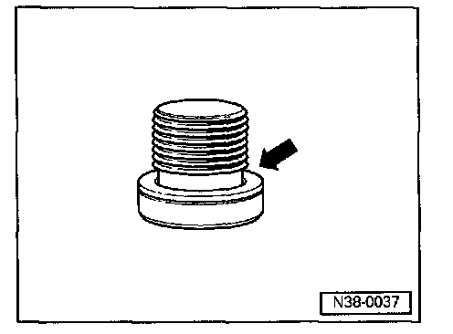
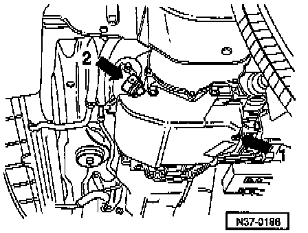

4 Speed 01M Transmission
ATF Level, Checking and Topping Up
Special Tools and Equipment

- VAG 1551 Scan Tool.

- VAG 1551/3 Cable.

- VAG 1924 Reservoir.
VW ATF is obtainable as a spare part:
- Container size 0.5 ltr. - Part No. G 052 162 A1.
- Container size 1.0 ltr. - Part No. G 052 162 A2.

- Always replace seal (arrow) when checking ATF level.
ATF Level, Checking
Checking Conditions
- Transmission not in emergency run mode, ATF temperature not above approx. 30° C (86° F).
- Vehicle level.
- Selector lever in "P".

- Attach VAG 1924 ATF filling system reservoir to vehicle.
- Connect VAG 1551 scan tool and enter address word "02 Transmission electronics". Advance until "Select function XX" is indicated on display.
- Start engine.
- Raise vehicle.
- Place container under transmission.
[ Rapid data transfer HELP ]
[ Select function XX ]
- Press buttons -0- and -8-. (Function "Read measured value block" is selected with -08-).
[ Rapid data transfer Q ]
[ 08 - Read measured value block ]
- Press -Q- button to confirm entry.
[ Reading measured value block ]
[ Enter display group number XX ]
- Press buttons-0- and -5-to select function 05, Display group number.
- Press -Q- button to confirm entry.
[ Reading measured value block 05 -> ]
[ 30 0 C 0011011 0 900 rpm ]
First display zone shows ATF temperature.
- Bring ATF to test temperature.
Test temperature: 35° C to 45 °C (95 to 113° F).

- Remove ATF level plug from oil pan.

The ATF present in the overflow pipe (arrow 2) runs out.
- Observe amount of ATF draining from plug hole afterward.
If ATF drips out of the hole:
ATF need not be topped up.
- Install new seal (arrow 1) to plug and tighten to 15 Nm, ATF check is completed.
Sealing plug (arrow 3) and cap (arrow 4) remain closed.
If the ATF present in the overflow pipe runs out of the plug hole but no further draining is observed:
- Top up ATF in transmission.
ATF, Topping Up
With engine running.

- Remove plug protective cap -arrow- with a screwdriver. As cap will be damaged, always replace cap.
- Remove plug from filler pipe.
Note: Some transmission have a cap with a spring retainer. A cap with a spring retainer can be used again.

- Fill with ATF using V.A.G 1924 until ATF runs out of plug hole -arrow-.
Caution! Too little or too much ATF will adversely affect transmission function.

- Install new seal to plug -arrow 1- and tighten to 15 Nm.
- Install plug on filler pipe until spring retainer lock locates, or
- Install plug on filler pipe and secure with a new cap -arrow 2-.
- Lock cap.
Note: Always replace protective caps without spring retainers. The cap secures the plug.